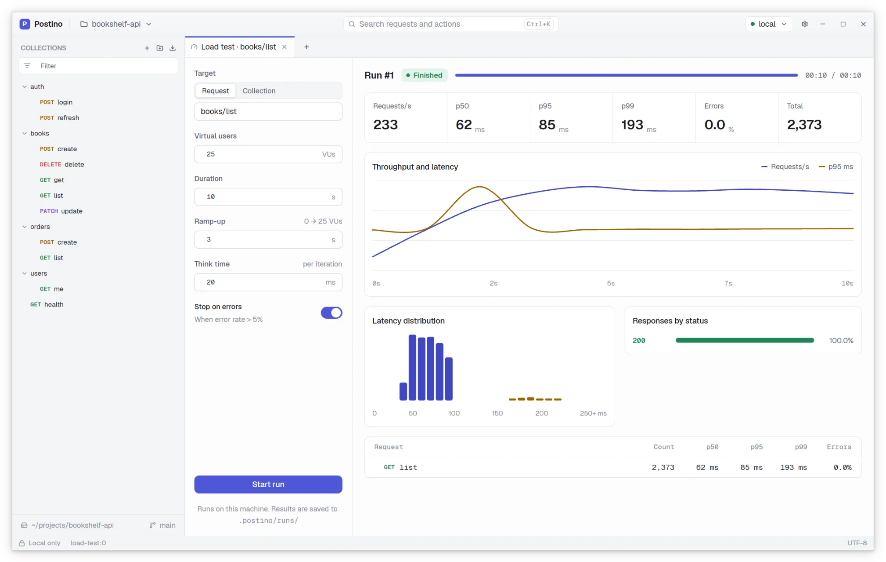
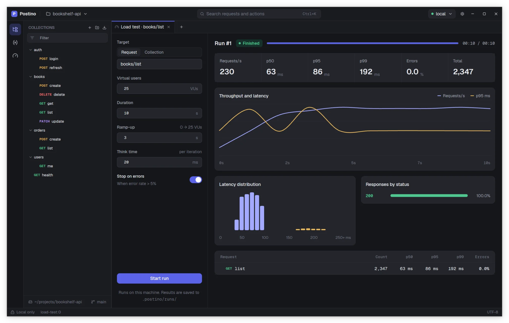

Load testing
Point a load test at one request or a whole folder, choose how many virtual users to run and for how long, and watch throughput and latency live. Every run is saved, so you can compare it with the previous one.


A load test sends a lot of traffic. Run it against your own servers, or with the permission of whoever runs them. Many APIs rate limit or block clients that send too much.
Starting a load test
There are three ways to open a load test tab:
- Right click a request or a folder in the sidebar and choose Load test…. The target is picked for you.
- Open the Load tests panel from the activity rail and click New load test.
- Run New load test from the command palette.
Then configure the run and press Start run.
Configuration
| Field | Default | Range | Meaning |
|---|---|---|---|
| Target | Request runs one request. Collection runs every request of a folder, in sidebar order. | ||
| Virtual users | 50 | 1 to 500 | How many users send requests at the same time, once the ramp-up is over. |
| Duration | 60 s | 1 s to 24 h | How long the run lasts, counted from the start, ramp-up included. |
| Ramp-up | 10 s | 0 s to 24 h | How long it takes to start every virtual user. Users start at even intervals: with 50 users and 10 s, one every 200 ms. |
| Think time | 0 ms | 0 to 600,000 ms | The pause each virtual user takes after one pass over the target, before starting the next. |
| Stop on errors | Off | Ends the run early when the error rate goes above 5%, once at least 50 requests have completed. |
A value outside its range is brought back into it when the run starts. Load tests use the active environment.
How a run works
- Each virtual user is a separate thread that loops over the target: one request, or every request of the folder in order, then the think time, then again, until the duration is over or you press Stop run.
- Every iteration runs the full pipeline: pre-request script, variables, HTTP, post-response script.
- Each virtual user has its own copy of the session variables. A collection that starts with a login request whose post-response script calls
env.set("token", …)works as expected: each user logs in and uses its own token for the next requests. - Stopping takes effect in well under a second, even during a long think time.
- The run happens on your machine. Your own CPU and network are part of the measurement, so for serious numbers use a machine close to the server.
Reading the dashboard
The dashboard updates live while the run is in progress. Its header shows the run number and state: Running, Finished (the full duration elapsed), Stopped (by hand or by Stop on errors) or Failed (the run could not start).
- Requests/s
- Throughput: the requests completed during the last full second.
- p50, p95, p99
- Latency percentiles over the whole run. p95 is 120 ms means that 95% of requests took 120 ms or less. Percentiles use the nearest rank method, so every value shown is a latency that actually happened.
- Errors
- The share of requests that failed. A request counts as an error when it timed out, could not be sent, its pre-request script threw, or its status was 400 or higher. Failed tests and post-response script errors are not counted.
- Total
- The number of requests completed.
- Throughput and latency
- A chart with one point per second: requests completed in that second and their p95 latency.
- Latency distribution
- A histogram of all latencies.
- Responses by status
- How many responses came back with each status code, plus Timeout and Failed.
- Per request
- For a collection, one row per request with its count, p50, p95, p99 and error rate.
Comparing runs
Use Compare with to pick an earlier run. The comparison shows, for Requests/s, p95, p99 and Errors, the previous value, the current one and the change, colored as better or worse:
- Requests/s and latencies change as a percentage of the previous value.
- The error rate changes in percentage points: going from 2% to 5% is +3 points.
- Higher is better for Requests/s; lower is better for p95, p99 and Errors.
Compare runs with the same configuration, or the difference says more about the settings than about your API.
Run history
Every run is saved as a JSON file in .postino/runs/ inside the workspace, numbered 0001.json, 0002.json and so on. A run file holds when it started, what it targeted, its configuration (without request bodies or secrets) and the final metrics. Previous runs lists them, newest first, and opening one shows its dashboard.
The Load tests panel of the sidebar lists the runs of the current session with their state and p95.
Whether to commit .postino/runs/ is up to you. Committing it keeps a performance history next to the code; ignoring it keeps the repository small. See Working with git.
Tips
- Start small: 5 users for 30 seconds tells you whether the setup works before you push harder.
- Use a ramp-up. Starting hundreds of users at once measures the connection storm, not steady state.
- A think time of a few hundred milliseconds makes virtual users behave more like real ones.
- Keep tests in the post-response script cheap: they run on every iteration.
- Watch the Responses by status panel: a fast run full of 429 or 503 responses is not a fast API.